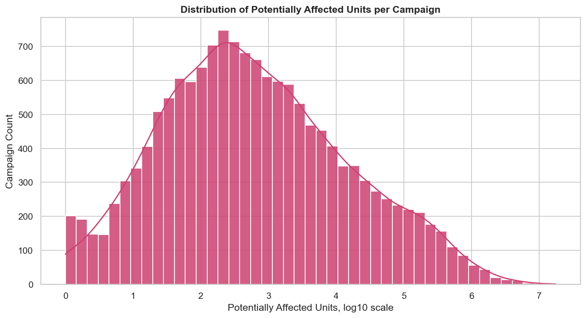
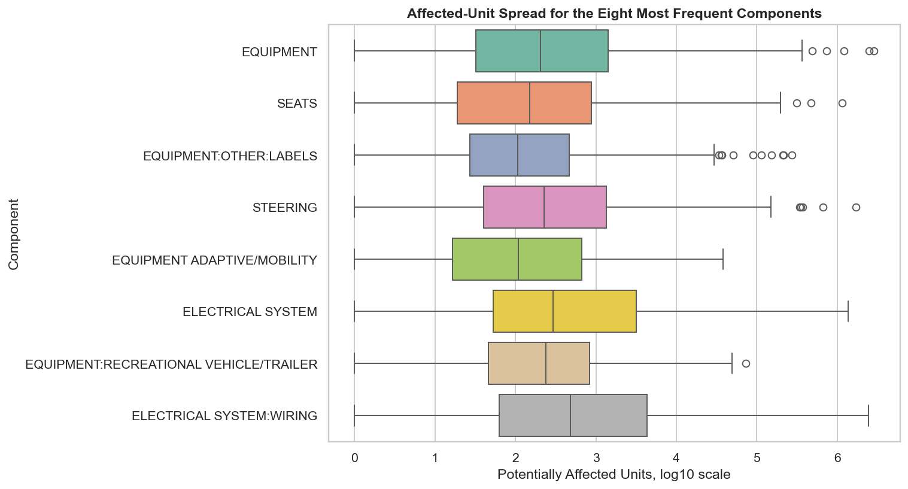
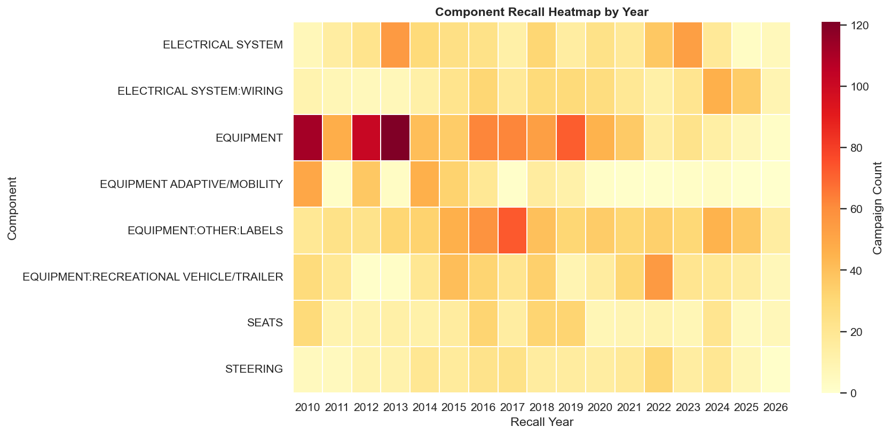
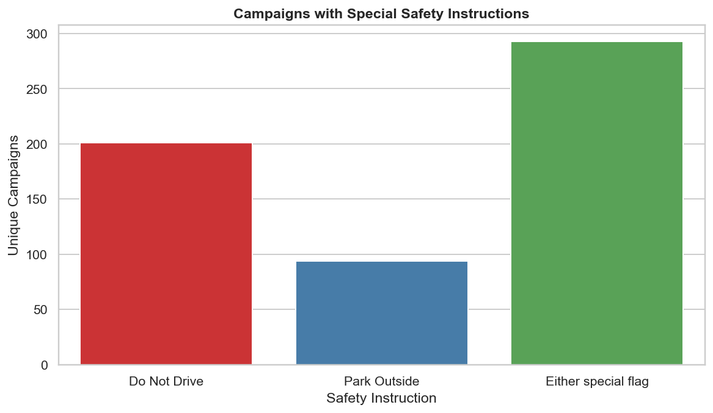
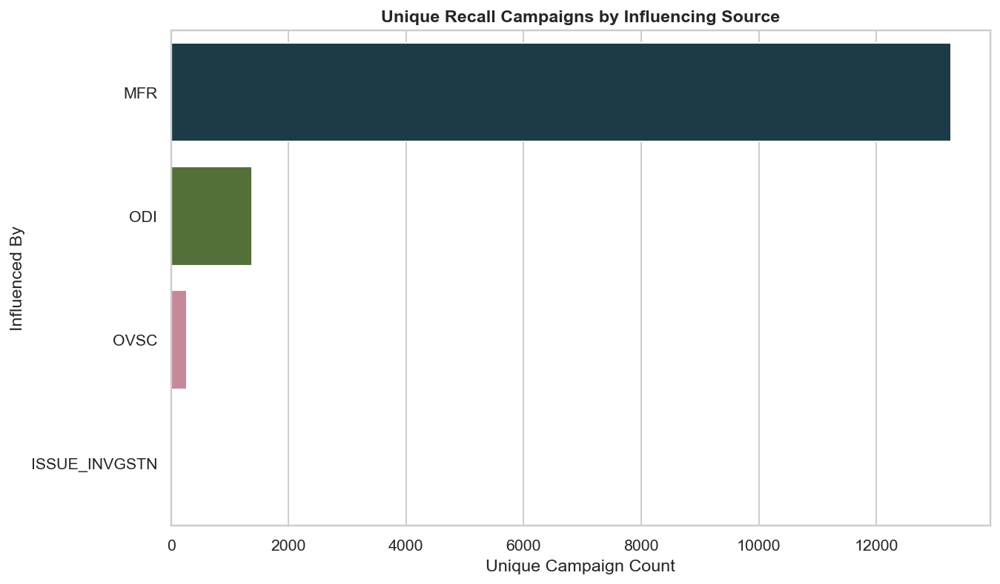
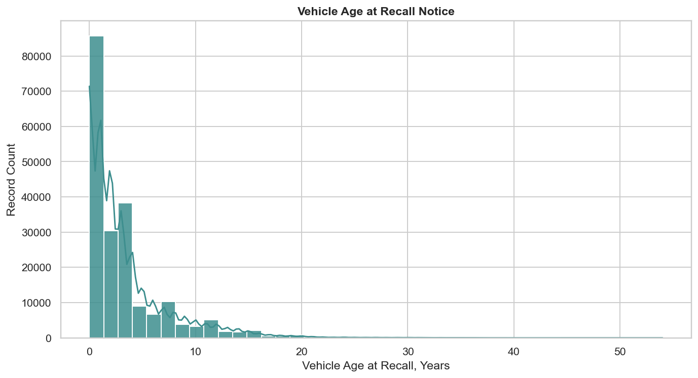

Visual evidence
Ten Seaborn charts, every claim sourced
Each figure was rendered with Seaborn and exported at print quality. Click any figure to inspect the full-resolution version.

Recall activity over time
Activity peaks at 1,094 campaigns in 2021; year-to-year movement reflects technology, regulation, and large investigations.

Top makes by campaign count
FORD leads with 805 campaigns; high counts reflect activity, not safety - exposure data is not included.

Top components by campaign count
EQUIPMENT, EQUIPMENT:OTHER:LABELS, and ELECTRICAL SYSTEM are the most frequent categories.

Affected-unit distribution
Skewness 23.86, kurtosis 965.88 - log10 transformation is statistically justified, not cosmetic.

Within-component variability
Campaign count and campaign scale measure different things - boxplots make that obvious.

Component activity by year
Heatmap exposes component-year combinations that would be invisible in a flat table.

Urgency flags
Special-flag campaigns require immediate behaviour change, not scheduled repair.

Influence sources
Manufacturer-initiated recalls dominate; regulator investigations are a smaller but distinct stream.

Vehicle age at recall
Most recalls occur close to the model year; the long tail represents harder-to-complete older-vehicle recalls.

Age vs campaign scale
Pearson r = +0.26. Scale depends more on model count and production volume than on age alone.